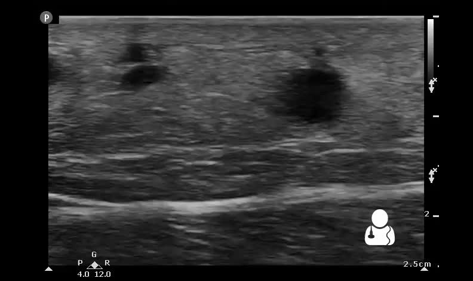

Ficha del catálogo
Absceso de partes blandas y celulitis
- Sistema
- Óseo
- Modalidad
- US
- Región
- Partes blandas
- Dificultad
- Intermedio
Las infecciones de partes blandas son motivo frecuente de consulta y la decisión clínica principal consiste en saber si hay una colección drenable o solo una celulitis que responderá a antibiótico. La exploración física es poco fiable en zonas profundas o en pacientes obesos. La ecografía resuelve la duda en pocos minutos, sin radiación y a pie de cama. Además permite guiar el drenaje y detectar cuerpos extraños que perpetúan la infección.
Técnica
Sonda lineal de alta frecuencia sobre la zona indurada, con abundante gel y presión mínima al inicio, más estudio Doppler color. La compresión suave ayuda a demostrar el contenido móvil de la colección.
Qué observar
- Colección hipoecoica o anecoica con contenido que se moviliza al comprimir
- Refuerzo acústico posterior propio de un contenido líquido
- Ausencia de señal Doppler dentro de la colección y aumento periférico
- Pared engrosada e hiperemia de los tejidos vecinos
- Patrón en empedrado del tejido celular subcutáneo, propio de la celulitis
- Focos hiperecoicos con sombra o reverberación por gas o cuerpo extraño
Hallazgos
Colección de contenido heterogéneo, sin flujo interno y con hiperemia periférica, rodeada de tejido subcutáneo engrosado con líquido entre los lobulillos grasos.
Perlas
La ausencia de flujo Doppler dentro de la lesión es el dato que separa una colección de un tejido inflamatorio sólido o de una masa vascularizada. Un remolino de ecos al comprimir con la sonda confirma que el contenido es líquido y drenable.
Diagnóstico diferencial
- Celulitis sin absceso
- Tejido engrosado en empedrado pero sin colección definida.
- Hematoma
- Antecedente traumático, ecogenicidad cambiante y sin hiperemia marcada.
- Adenopatía necrosada
- Morfología ovalada con resto de corteza ganglionar reconocible.
Simuladores
- Quiste epidérmico con contenido ecogénico
- Bursitis con líquido y engrosamiento sinovial
- Linfedema con líquido difuso entre los lobulillos grasos
Por modalidad
- US
- Primera línea para distinguir celulitis de absceso y guiar el drenaje
- TC
- Valora colecciones profundas, gas y extensión a planos musculares
- RM
- Método más sensible para la afectación muscular y ósea asociada
Protocolo
Estudio ecográfico con sonda lineal y Doppler color, ampliado con sonda convexa en lesiones profundas. Tomografía o resonancia cuando se sospecha afectación de planos profundos o del hueso.
Clasificación
Errores frecuentes
- Comprimir con fuerza desde el principio y vaciar de forma aparente la colección
- No usar Doppler y confundir una masa sólida con un absceso
- Pasar por alto un cuerpo extraño responsable de la infección

partes blandas absceso celulitis ecografia doppler drenaje empedrado